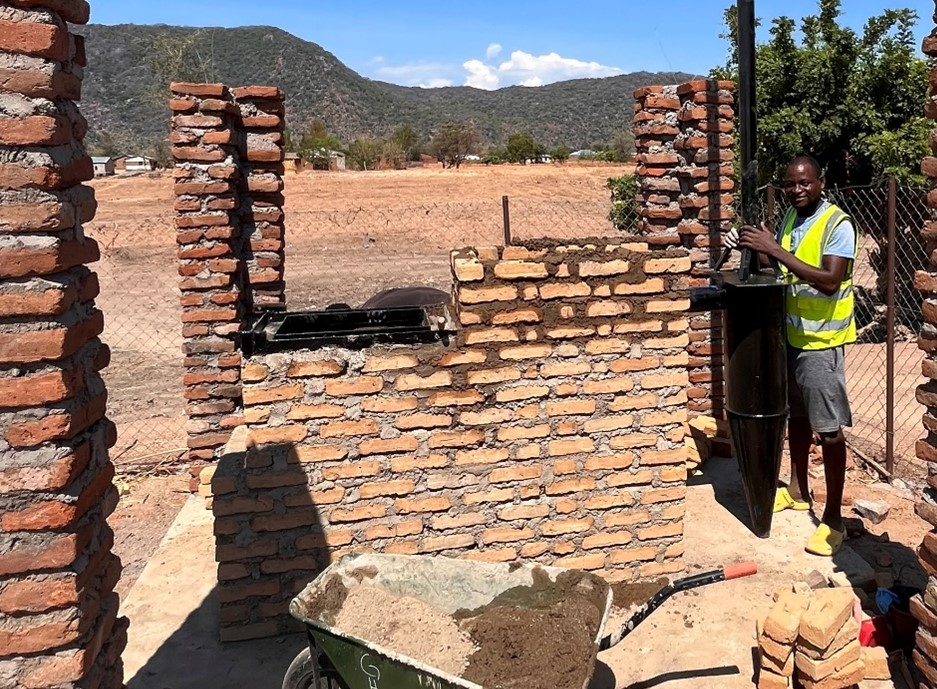

Low-Cost Incinerator for Cape Maclear, Malawi
Design, Maintenance, and Operation


Contributors:
- Mosè Peduzzi  0009-0004-6055-3835 author
0009-0004-6055-3835 author
- Jakub Tkaczuk  0000-0001-7997-9423 supervisor, maintainer, developer
0000-0001-7997-9423 supervisor, maintainer, developer
- Elizabeth Tilley  0000-0002-2095-9724 supervisor
0000-0002-2095-9724 supervisor

Github repository for this page sits here.
1 Introduction
This video presents the construction of a modified De Montfort Incinerator Mark 8A, designed and built between October and December 2023 in Cape Maclear, Malawi. The incinerator presents several modifications compared to the original design 1, e.g., the ash collection drawer 2 and the cyclone separator to filter the flue gases.
The construction of the incinerator is part of a broader project conducted by Global Health Engineering, an ETH research group, which aims to introduce regular waste collection in the township of Cape Maclear, Malawi, ensuring safe waste disposal and minimizing environmental contamination. This incinerator reduces waste volume and makes hazardous waste harmless, emphasizing cost-effectiveness.
2 Incinerator Overview
The incinerator built within this work is a small-size incinerator, composed of a structure of refractory bricks and cement with a metal frame on the top. The interior space is divided into two combustion chambers; the first can be accessed by the operator through a door located at its top, allowing for inserting of a new waste bag. The second combustion chamber and the attached cyclone separator remain inaccessible to the operator and are intended solely for to treat the fumes. The purpose of the second combustion chamber is to reduce carbon monoxide to carbon dioxide through secondary combustion (and combustion time increase), while the cyclone separator allow to reduce the particulate matter (PM) in the fume gasses.
The incinerators can burn about 3.5 kg/h of waste, reaching temperature of 770°C. The mass of the ashes produced by the incinerators represent about 20-30% of total mass of waste burnt.


3 Part List
| No. | Item | Specs | Qty. | Source | Cost per unit (USD) | Total Cost (USD) |
|---|---|---|---|---|---|---|
| 1 | Metal U-Channel | L x W x H: 100 mm x 60 mm x 6 m | 1 | DeeKay | 85.29 | 85.29 |
| 2 | Angle Iron 30x30x3 mm 6 m | L x W x T: 30 mm x 30 mm x 3 mm x 6 m | 1 | DeeKay | 14.71 | 14.71 |
| 3 | Metal plate | L x W x H: 2400 mm x 1200 mm x 3 mm | 1 | DeeKay | 126.47 | 126.47 |
| 4 | Metal tube with a diameter | D x L: 75 mm x 3 m | 1 | DeeKay | 46.76 | 46.76 |
| 5 | Flat bar | L x W x H: 35 mm x 3 mm x 6 m | 1 | DeeKay | 17.35 | 17.35 |
| 6 | Heat resistent paint | 1 L | 1 | Valmore Paints | 7.47 | 7.47 |
| 7 | Threaded Rod | D x L: M 10 x 1 m | 1 | Build Africa | 6.62 | 6.62 |
| 8 | Bolt | M 10 | 10 | Lilongwe | 0.12 | 1.18 |
| 9 | Washer | M 10 | 2 | Lilongwe | 0.12 | 0.24 |
| 10 | Empty oil barrel | 200 L | 1 | Ndirande market | 17.65 | 17.65 |
| 11 | Cement bag | 50 kg | 8 | Monkey bay | 11.76 | 94.12 |
| 12 | Sand | 1 ton | 2 | Cape Maclear | 2.94 | 5.88 |
| 13 | Bricks (njeli) | L x W x H: 10 cm x 17 cm x 6 cm | 1200 | Cape Maclear | 0.03 | 31.76 |
| 14 | Armament bar | D x L: 10 mm x 12 m | 1 | DeeKay | 11.76 | 11.76 |
| Total Costs (USD) | 467.26 |
4 Safety Precautions
Always wear protective equipment when working with the incinerator. Goggles, gloves, and closed footwear are essential for protecting the operator’s health.
5 License
The complete design and user manual are licensed under Creative Commons Attribution 4.0 International.